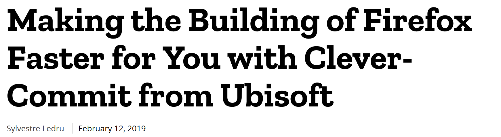

Analytics at Ubisoft
Christoph Safferling
October 15, 2019
Introduction

- founded in 1988, best known for the Settlers and Anno brand
- fully acquired by Ubisoft in 2001
- online games since 2010
- co-development on For Honor™, Rainbow Six® Siege, and Far Cry®
- next release: The Settlers®
Christoph Safferling
- Director of Data and Services at Ubisoft Blue Byte
- PhD in economics: Three Essays on the Economics of Online Games
- contact:
- mail: christoph.safferling@ubisoft.com
- LinkedIn: https://www.linkedin.com/in/safferling
- Github: safferli; Twitter: safferli
- this talk: https://github.com/safferli/analytics_at_ubisoft
Live Operation Games
Definitions
- large online component
- continuous updating and balancing of the game
- need for data

Free to Play
freemium: the ‘-mium’ is Latin for ‘not really’
Southpark, Season 18, Episode 6
- time vs money: opens game to a larger audience
- gives customers more impact on gameplay
- Extra Credits on
- Microtransactions https://www.youtube.com/watch?v=WXA559KNopI&hd=1
- Doing Free to Play Wrong https://www.youtube.com/watch?v=Mhz9OXy86a0&hd=1
But… I’m creative! I don’t need data!
Why will you want data?
- market estimation/business case
- “even if you are prepared to wait for two and a half years to see the money come in, 69% of indie games are going to lose money” – Cliff Harris, Jan 2016
- no business case, no money
- game design
- confirm your expectations/calculations
- what do your players actually like?
- progression is one of the key GD principles… it’s tricky and hard work!
if you can only track few data points
- sales data (obviously!)
- progress meter (e.g. playerlevel, mainquest completion)
- playtime (of different modes)
Data Scientists
[A data scientist is] a high-ranking professional with the training and curiosity to make discoveries in the world of big data.
Data Scientist: the sexiest job of the 21st century, Harvard Business Review, Oct 2012


Any difference between them all?
- Data science produces insights
- Machine learning produces predictions
- Artificial intelligence produces actions
When you’re fundraising, it’s AI
When you’re hiring, it’s ML
When you’re implementing, it’s linear regression
When you’re debugging, it’s printf()
— Baron Schwartz (@xaprb) November 15, 2017
Skills sought after
- domain knowledge and experience
- “mitdenken”: think and act independently, and ahead
- statistics and mathematics
- Linux and scripting, mostly R and Python
- database (SQL and NoSQL, Hadoop) knowledge
- communication and presentation skills
Analytics at Ubisoft
Game Analytics
- provide data, data support, and insights to all
- managers
- game designers
- marketing
- CRM/support
- LiveOps team (including programmers)
- educate on data and data usage
UPEQ
fancy shit!
- Shiny R: ACID mission dashboard
- Survival analysis: Anno 2205 event sessions
Machine Learning at Ubisoft
La Forge
Smart Bots
Commit Assist

Denoising Motion Capture
Sound Matching

AI car driving

Deepsense
3d Asset Labelling

SAM chatbot

Conclusion
- modern games rely on data for game design
- modern ML/AI applications in development
- in fact, data/“AI” is changing the way any work is done
- tasks are getting replaced, not jobs